Sango, Nara: things to do, food and stays
Sango · Nara
Sango
Highlighted on the Nara map.

Stay
旅亭十三屋
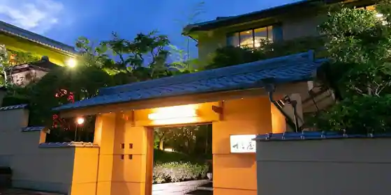
Tabi Tei Jusan Ya
奈良信貴の湯温泉 和のオーベルジュ柿本家
Nara Shigi No Yu Onsen Nagono Oberuju Kakimoto Ie
Inn at Narashiginoyu Onsen in Shigisanto, Sango.
天然湧出信貴山温泉 信貴山観光ホテル
Tennen Yushutsu Shigi Yama Onsen Shigi Yama Kanko Hotel
Hotel at Zenyushutsushigiyama Onsen in Shigiyamanishi, Sango.
Dining
カフェ ファンチャーナ
Cafe Fanchana
CROCO BAKERY
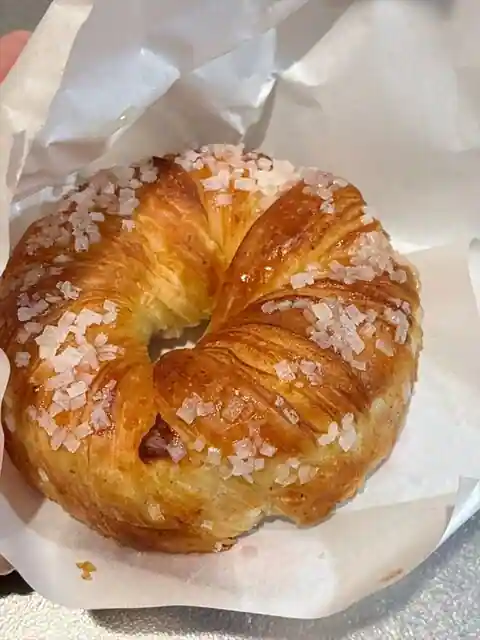
CROCO BAKERY
a bread of fresh air
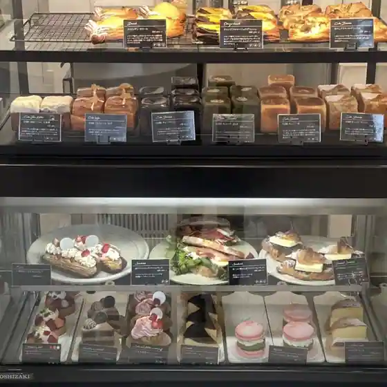
a bread of fresh air
寅茶屋
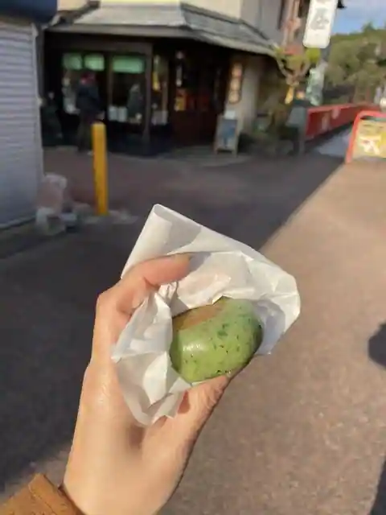
Tora Chaya
龍鳳園 三郷店
Ryuho Sono Misato
洋菓子工房 ボン・シック
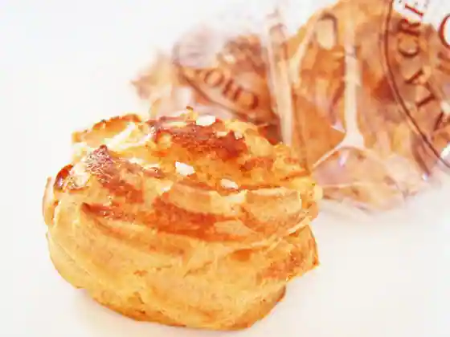
Yogashi Kobo Bon Shikku
柿本家
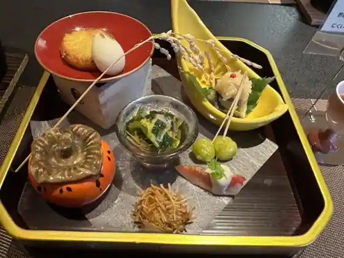
Kakimoto Ie
蓬乃里
Yomogi No Sato
2n+1
2n+1
ふくろ工房 夢カフェ
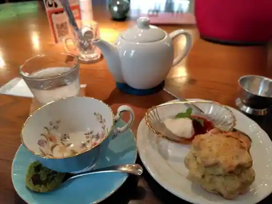
Fukuro Kobo Yume Cafe
むぎっ子
Mugitsu Ko
イタリアンレストラン ひのでや
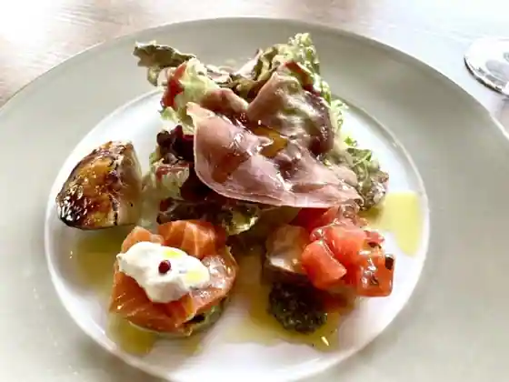
Itarian Restaurant Hinodeya
松月
Matsuzuki
信貴めし
Shigi Meshi
氷華旺府
Hyoka O Fu
ミサト屋
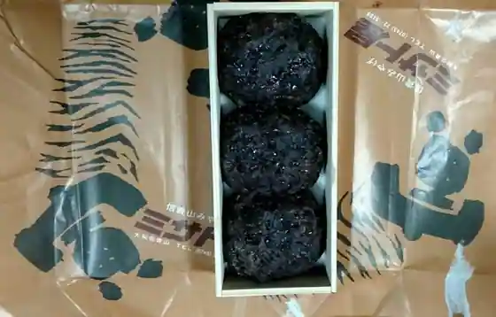
Misato Ya
旺府
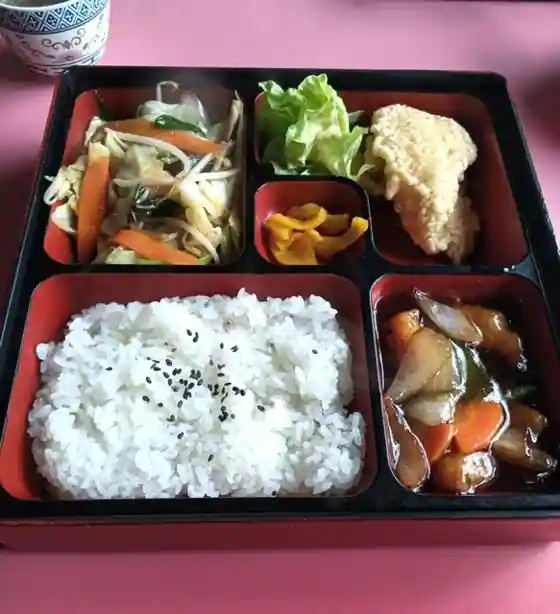
O Fu
四ッ葉のクローバー
Shi Tsu Ha No Kuroba
いんくるれすとらん
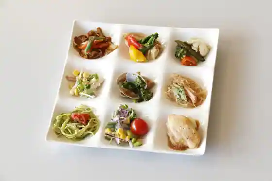
Inkururesutoran
ハイカラさんがとおる
Haikara Sangatoru
信貴山観光ホテル ふうちん
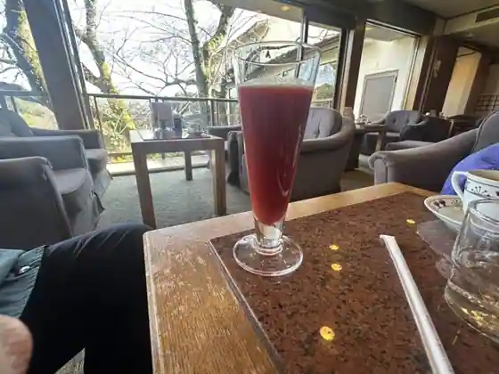
Shigi Yama Kanko Hotel Fuchin
Sights
Nogyo Koen Shigi Yama no Doka Village
Tatsuta Taisha
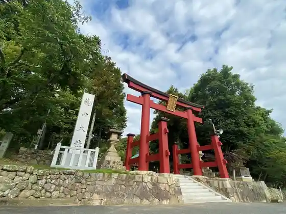